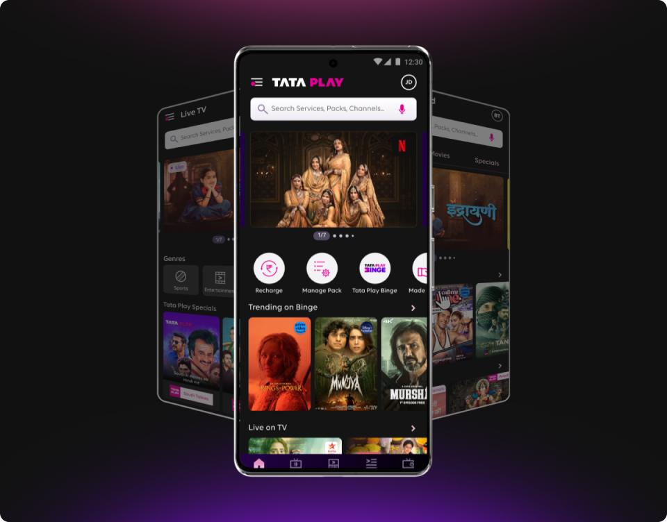
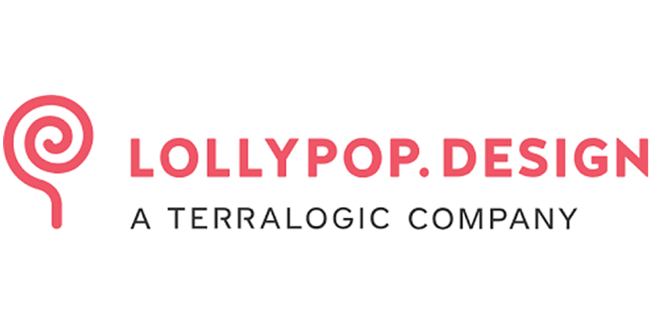
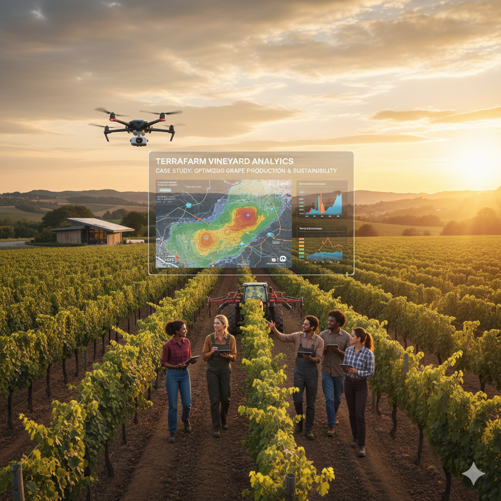

Designing end-to-end app experiences
for 100M+ users
Sept 2024 – Present

View Product


Sept 2024 – Present

View ProductAdvocating for a system that could grow without breaking.

2022 - 2023

View Product